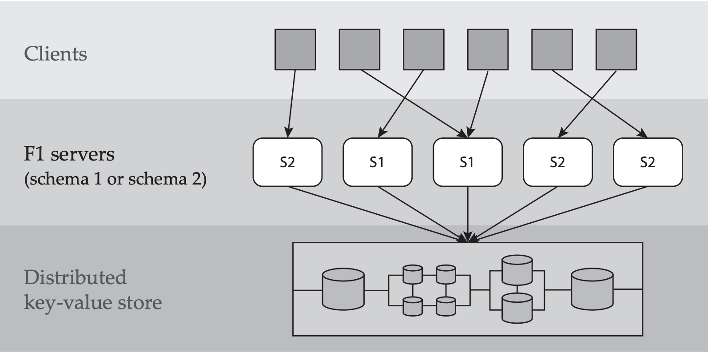

Read Google F1
Abstract
- a protocol for schema evolution in a globally distributed database management system with shared data, stateless servers, and no global membership.
- asynchronous
- all servers can access and update all data during a schema change
INTRODUCTION
- Schema evolution: the ability to change a database’s definition without the loss of data
- F1 is built on top of Spanner, a globally distributed KV data store
Main feature
The main features of F1 that impact schema changes are:
- Massively distributed:
- An instance of F1 consists of hundreds of individual F1 servers
- Relational schema:
- Each F1 server has a copy of a relational schema that describes tables, columns, indexes, and constraints.
- Any modification to the schema requires a distributed schema change to update all servers
- Shared data storage:
- All F1 servers in all datacenters have access to all data stored in Spanner.
- Stateless servers:
- F1 servers must tolerate machine failures, preemption(取代), and loss of access to network resources
- clients may connect to any F1 server, even for different statements in the same transaction.
- F1 servers must tolerate machine failures, preemption(取代), and loss of access to network resources
- No global membership:
- no reliable mechanism for determining currently running F1 servers, and explicit global synchronization is not possible

several constraints on the schema change process:
- Full data availability:
- the availability of the data managed by F1 is paramount(至为重要的)
- it is unacceptable to take even a portion of the database offline during a schema change (e.g., locking a column to build an index).
- Minimal performance impact:
- the F1 schema changes rapidly to support new features
- Asynchronous schema change
- In other words, different F1 servers may transition to using a new schema at different times
These requirements influenced the design in several ways
- Since all data must be as available as possible, we do not restrict access to data undergoing reorganization.
- Because the schema change must have minimal impact on user transactions, we allow transactions to span an arbitrary number of schema changes, although we do not automatically rewrite queries to conform to the schema in use
- Applying schema changes asynchronously on individual F1 servers means that multiple versions of the schema may be in use simultaneously
An example
- Consider a schema change from schema
S1to schemaS2that adds indexIon tableR - Assume two different servers,
M1andM2, execute the following sequence of operations:- Server
M2, using schemaS2, inserts a new rowrto tableR. BecauseS2contains indexI, serverM2also adds a new index entry corresponding torto the key– value store. - Server
M1, using schemaS1, deletesr. BecauseS1does not containI,M1removesrfrom the key–value store but fails to remove the corresponding index entry inI.
- Server
- The second delete leaves the database corrupt.
We consider not only changes to the logical schema, such as the addition or removal of columns, but also changes to the physical schema like adding or removing secondary indexes.
By ensuring that:
- no more than two schema versions are in use at any given time
- those schema versions have specific properties?
enables distributed schema changes in a way that
does not require global membership, implicit or explicit synchronization between nodes, or the need to retain old schema versions once a schema change is complete
BackGround
In this section, we:
- separate the interface provided by the key–value store from its implementation
- show how we map traditional relational database features into this unique setting
Key-value store
- F1 assumes the key–value store supports three operations
- put: insert a value with a given key
- del: delete a value with a given key
- get: returns any stored values whose key matches a given prefix
-
Note that put and del reference exactly one key–value pair, while get may return multiple key–value pairs
- Two more requirements
- Commit timestamps: Every key–value pair has a last-modified timestamp which is updated atomically by the key–value store
- Atomic test-and-set support: Multiple get and put operations can be executed atomically
Relational schema
- An F1 schema is a set of table definitions that enable F1 to interpret the database located in the key–value store
- Each table definition has:
- a list of columns
- a list of secondary indexes
- a list of integrity constraints(foreign key or index uniqueness constraints)
- a list of optimistic locks.
- required columns that cannot be read directly by client transactions
- A subset of columns in a table forms the primary key of the table
- We call a column required if its value must be present in every row. All primary-key columns are implicitly required, while non-key columns may be either required or optional
Row representation
-
one pair for each non-primary-key column
-
Each key logically includes
- the name of the table,
- the primary key values of the containing row,
- the name of the column whose value is stored in the pair
-
Although this appears to needlessly repeat all primary key values in the key for each column value, in practice, F1’s physical storage format eliminates this redundancy


- A secondary index
- covers a non-empty subset of columns on a table
- is itself represented by a set of key–value pairs in the key– value store
- Each row in the indexed table has an associated index key–value pair
- The key for this pair is formed by concatenating
- the table name
- the index name
- the row’s indexed column values
- and the row’s primary key values
- The key for this pair is formed by concatenating
- We denote the index key for row $r$ in index $I$ as $k_r(I)$
- the special exists column doesn’t have the associated value
Relational operations
F1 supports a set of standard relational operations:
- $insert(R,vk_r,vc_r)$ inserts row r to table R with primary key values $vk_r$ and non-key column values $vc_r$. Insert fails if a row with the same primary key values already exists in table R.
- $delete (R, vk_r )$
- $update(R,vk_r,vc_r)$
- $query(\vec{R},\vec{C},P)$ :returns a projection $\vec{C}$ of rows from tables in $\vec{R}$ that satisfy predicate $P$ .